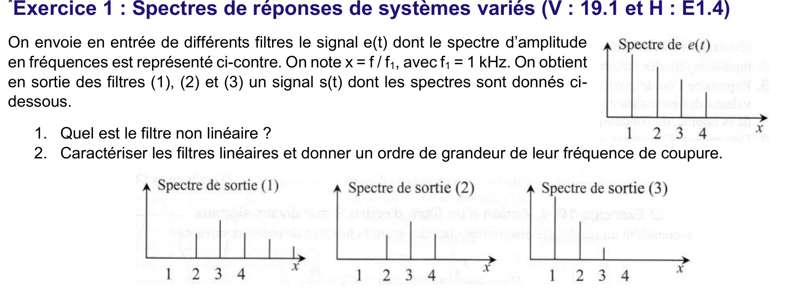
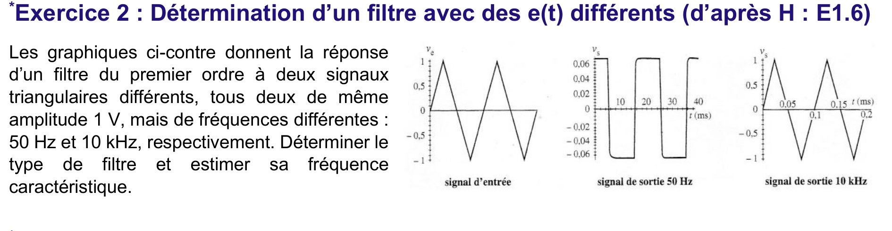
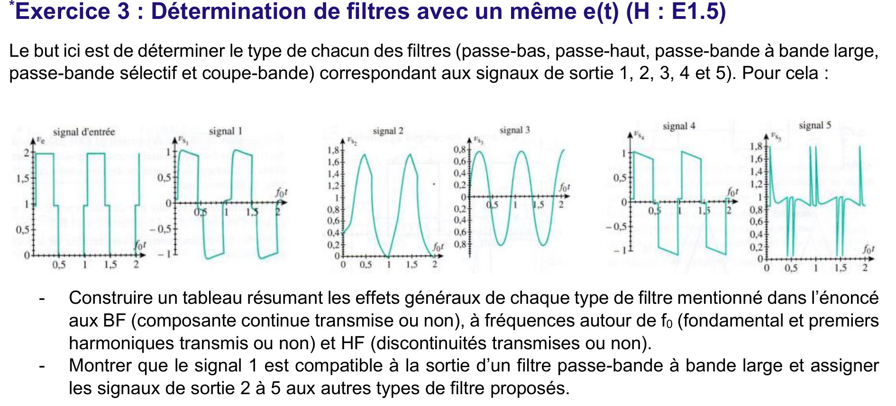
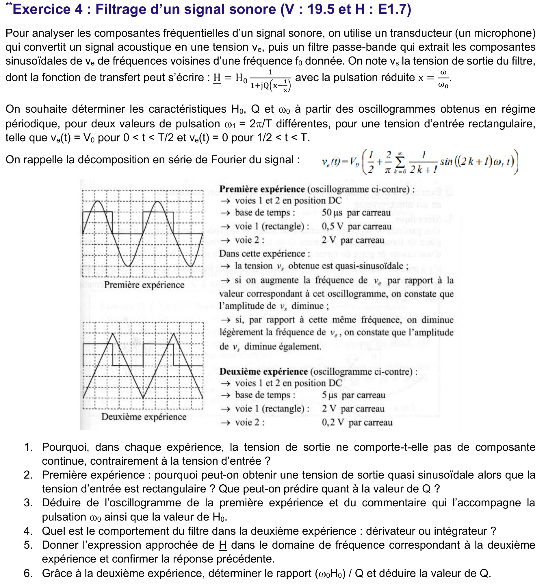
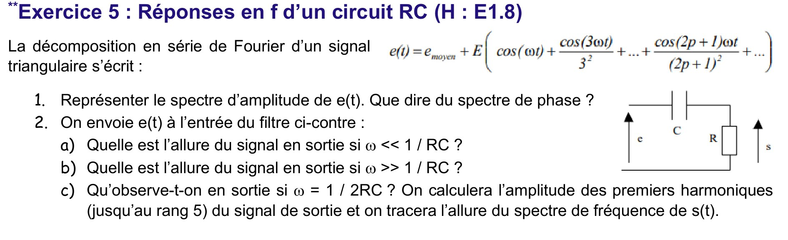

Chapitre 2 — Filtrage d'un signal périodique & stabilité des SLCI
Décomposition en série de Fourier, action d'un filtre passif sur un signal périodique (méthode par superposition), et pourquoi un filtre analogique passif est toujours stable. Cours résumé + les 2 questions du CM résolues, spectre tracé. AM2 · P2030 · Semestre 3 — D. Courtois, 08/09/2026.
1. Décomposition d'un signal périodique en série de Fourier
Tout signal \(u(t)\) périodique de fréquence \(f\) se décompose en une somme discrète de signaux harmoniques de fréquences multiples de \(f\) : c'est son développement en série de Fourier.
\[ u(t)=U_0+\sum_{n=1}^{\infty}C_n\cos(2\pi nft+\varphi_n) =U_0+\sum_{n=1}^{\infty}A_n\cos(2\pi nft)+\sum_{n=1}^{\infty}B_n\sin(2\pi nft) \]- \(U_0\) : la composante continue — la valeur moyenne du signal.
- \(n=1\) : le fondamental, de même fréquence \(f\) que le signal entier.
- \(n>1\) : les harmoniques de rang \(n\) (fréquence \(nf\)).
Spectre d'amplitude en fréquences
Il donne les amplitudes \(C_n\) des composantes en fonction de leur fréquence, sous forme d'un diagramme en bâtons : rang \(n\) (ou fréquence \(nf\)) en abscisse, \(|C_n|\) en ordonnée. Les phases \(\varphi_n\) n'y figurent pas (elles relèvent d'un spectre de phase, rarement tracé ici).
Spectres des signaux périodiques usuels
En plus d'une éventuelle composante continue \(U_0\) (signaux non symétriques) :
| Signal | Contenu harmonique | Loi des amplitudes |
|---|---|---|
| Sinusoïdal | fondamental seul | \(C_1\) seul |
| Triangulaire | harmoniques impairs | \(C_n=\dfrac{C_1}{n^2}\) |
| Créneau | harmoniques impairs | \(C_n=\dfrac{C_1}{n}\) |
2. Action d'un filtre analogique passif sur un signal périodique
- Décomposer le forçage en Fourier : \(\;e(t)=E_0+\displaystyle\sum_{n=1}^{\infty}E_n\cos(\omega_n t+\varphi_{en})\).
- Appliquer la FTH à chaque composante (même fréquence en sortie) : \[ S_n=|\underline H(\omega_n)|\,E_n\ ,\qquad \varphi_{sn}=\varphi_{en}+\arg\underline H(\omega_n). \]
- Recombiner : \(\;s(t)=S_0+\displaystyle\sum_{n=1}^{\infty}S_n\cos(\omega_n t+\varphi_{sn})\).
3. Stabilité : un filtre analogique passif est toujours stable
3.1 · Définition
La solution générale de l'ED (réponse en régime transitoire) s'écrit \(\;s(t)=s_h(t)+s_p(t)\) :
- \(s_h(t)\) : réponse en régime libre (solution de l'ED homogène, \(e(t)=0\)) ; forme fixée par l'ordre, dépend des conditions initiales.
- \(s_p(t)\) : réponse en régime forcé (solution particulière), même forme que \(e(t)\), indépendante des conditions initiales.
3.2 · Conditions de stabilité
Système du 1ᵉʳ ordre
\[ D_0 s_h+D_1\frac{ds_h}{dt}=0 \ \Longleftrightarrow\ s_h(t)=A\,e^{-D_0 t/D_1} \]\(\displaystyle\lim_{t\to\infty}s_h=0\) ssi \(\dfrac{D_0}{D_1}>0\), c.-à-d. \(D_0\) et \(D_1\) de même signe.
Système du 2ᵈ ordre
\[ D_0 s_h+D_1\frac{ds_h}{dt}+D_2\frac{d^2s_h}{dt^2}=0 \ \to\ D_2r^2+D_1r+D_0=0\ ,\quad \Delta=D_1^2-4D_0D_2 \]| Cas | \(s_h(t)\) | \(\lim_{t\to\infty}s_h=0\) ssi |
|---|---|---|
| \(\Delta>0\) | \(A e^{r_+t}+B e^{r_-t}\), \(r_\pm=\dfrac{-D_1\pm\sqrt\Delta}{2D_2}\) | \(r_++r_-=-\tfrac{D_1}{D_2}<0\) et \(r_+r_-=+\tfrac{D_0}{D_2}>0\) |
| \(\Delta=0\) | \((At+B)e^{rt}\), \(r=\dfrac{-D_1}{2D_2}\) | \(r<0\) (et \(D_1^2=4D_0D_2\)) |
| \(\Delta<0\) | \(\big[A\cos(\tfrac{\sqrt{-\Delta}}{2D_2}t)+B\sin(\cdots)\big]e^{-D_1 t/2D_2}\) | \(-\tfrac{D_1}{2D_2}<0\) et \(\tfrac{D_0}{D_2}>0\) |
Dans les trois cas, la condition revient à : \(D_2,\ D_1,\ D_0\) de même signe.
4. Questions du cours — résolues
Créneau symétrique ⇒ pas de composante continue (\(U_0=0\)) et uniquement des harmoniques impairs avec \(C_n=\dfrac{C_1}{n}\). (Rappel : pour un créneau d'amplitude \(U_{max}\), \(C_1=\dfrac{4U_{max}}{\pi}=\dfrac{4\times12}{\pi}\approx15\) V.)
Sur \([0-1\ \text{kHz}]\), les rangs impairs sont \(n=1,3,5,7,9\) (soit \(100,300,500,700,900\) Hz) :
| rang \(n\) | 1 | 3 | 5 | 7 | 9 |
|---|---|---|---|---|---|
| \(f=nf_0\) (Hz) | 100 | 300 | 500 | 700 | 900 |
| \(C_n=15/n\) (V) | 15 | 5 | 3 | ≈2,14 | ≈1,67 |
D'après le §2, chaque raie est multipliée par \(|\underline H(nf)|\). Le filtre ne peut qu'atténuer des raies existantes, jamais en créer.
Sortie d'un passe-bas
\(|\underline H|\) décroît avec la fréquence : les hautes harmoniques sont atténuées, le fondamental passe. Le signal temporel est arrondi (les fronts raides, portés par les rangs élevés, disparaissent).
Sortie d'un passe-haut
\(|\underline H|\) croît depuis 0 : le fondamental et les bas rangs sont atténués, les hautes harmoniques ressortent. Il ne reste que les variations brutales : des pics aux transitions du créneau.
Les 5 exercices du TD2 corrigés un par un. Pour chacun, l'énoncé (photo) est placé juste au-dessus de sa correction détaillée pas à pas : lecture de spectres, filtre linéaire vs non linéaire, dérivateur/intégrateur, passe-bande résonant (Q, H₀, ω₀) et réponse d'un circuit RC à un signal triangulaire. AM2 · P2030 · Semestre 3 — D. Courtois.

1) Quel est le filtre non linéaire ?
Règle : un filtre linéaire ne peut sortir que des fréquences déjà présentes dans l'entrée, soit des raies en \(x=1,2,3,4\) uniquement.
- Sortie (2) : raies en \(x=2,3,4\) ⟹ sous-ensemble de l'entrée ✔.
- Sortie (3) : raies en \(x=1,2,3\) ⟹ sous-ensemble de l'entrée ✔.
- Sortie (1) : raies en \(x=2,3,4,\mathbf{5,6}\) ⟹ les raies \(x=5\) et \(x=6\) n'existent pas dans \(e(t)\) ✘.
2) Caractériser les filtres linéaires, ordre de grandeur de \(f_c\)
On compare, raie par raie, sortie / entrée : le gain \(|H(x)|\) est le rapport des hauteurs (l'entrée vaut \(1\,;0{,}8\,;0{,}6\,;0{,}4\)).
Filtre (2) : la raie \(x=1\) est supprimée, la raie \(x=2\) est nettement atténuée, puis le gain est maximal et ≈ constant en \(x=3\) et \(x=4\) (la raie en 4 n'est pas plus atténuée que celle en 3 alors que l'entrée décroît). Les basses fréquences sont coupées, les hautes passent.
Filtre (3) : la raie \(x=1\) est gardée à fort niveau, \(x=2\) un peu atténuée, \(x=3\) très atténuée et \(x=4\) éliminée : les hautes fréquences sont coupées.

- À 50 Hz : la sortie est un créneau (période 20 ms) d'amplitude ≈ 0,065 V (très faible).
- À 10 kHz : la sortie est un triangle d'amplitude ≈ 1 V (≈ l'entrée).
1) Type de filtre
À basse fréquence (50 Hz) la sortie est très atténuée ; à haute fréquence (10 kHz) elle passe sans atténuation (\(s\approx e\)). Le gain croît avec la fréquence : c'est un passe-haut du 1ᵉʳ ordre.
Confirmation par la forme : à basse fréquence la sortie est la dérivée de l'entrée. Or la dérivée d'un triangle (pentes constantes ±) est un créneau — c'est exactement ce qu'on observe à 50 Hz. Un passe-haut du 1ᵉʳ ordre se comporte en dérivateur bien en dessous de sa coupure : \(s = \tau\,\dfrac{de}{dt}\) avec \(\tau=RC\).
2) Estimation de la fréquence caractéristique \(f_c=\dfrac{1}{2\pi RC}\)
En régime dérivateur (50 Hz), l'amplitude du créneau de sortie vaut \(RC\times\) la pente du triangle. Le triangle d'amplitude crête \(V_m=1\text{ V}\) balaie \(2V_m=2\text{ V}\) en une demi-période \(T/2\), d'où une pente
\[ \left|\frac{de}{dt}\right| = \frac{2V_m}{T/2}=4V_m f = 4\times 1\times 50 = 200\ \text{V/s}. \]L'amplitude du créneau observé étant \(S\approx 0{,}065\text{ V}\) :
\[ S = RC\left|\frac{de}{dt}\right| \;\Rightarrow\; RC=\frac{0{,}065}{200}\approx3{,}3\times10^{-4}\ \text{s} \;\Rightarrow\; f_c=\frac{1}{2\pi RC}\approx 4{,}9\times10^{2}\ \text{Hz}. \]
1) Tableau des effets généraux de chaque type de filtre
| Type de filtre | BF — composante continue | autour de f₀ — fondamental | HF — discontinuités (fronts) |
|---|---|---|---|
| Passe-bas | transmise ✔ | transmis ✔ | coupées ✘ (fronts arrondis) |
| Passe-haut | coupée ✘ | transmis ✔ | transmises ✔ (fronts raides) |
| Passe-bande bande large | coupée ✘ | transmis ✔ | transmises ✔ (large bande) |
| Passe-bande sélectif | coupée ✘ | transmis ✔ (seul) | coupées ✘ |
| Coupe-bande (réjecteur) | transmise ✔ | coupé ✘ | transmises ✔ |
Lecture : passe-bas = garde le bas (DC + f₀), lisse ; passe-haut = enlève le DC, garde les fronts ; bande large = enlève DC et le tout-haut, garde une large plage ; sélectif = ne garde que f₀ (⟹ sinusoïde) ; coupe-bande = enlève seulement f₀, garde DC et fronts.
2) Signal 1 = passe-bande à bande large, et affectation des signaux 2 à 5
Signal 1 — passe-bande à bande large (à montrer)
Le signal 1 oscille autour de 0 (⟹ pas de composante continue : le DC est coupé) tout en gardant des fronts raides (⟹ HF transmises) et une allure globale de créneau (⟹ fondamental transmis). Le léger affaissement (droop) des plateaux traduit la perte des toutes basses fréquences. DC coupé + fondamental + large bande d'harmoniques ⟹ c'est bien la signature d'un passe-bande à bande large. ✔
Signaux 2 à 5 — par élimination via le tableau
| Signal | Ce qu'on observe | DC | f₀ | HF | ⟹ Filtre |
|---|---|---|---|---|---|
| Signal 2 | bosses arrondies, positives (0,2→1,8), aucun front | ✔ | ✔ | ✘ | Passe-bas |
| Signal 3 | sinusoïde propre centrée sur 0 (±0,8) | ✘ | ✔ seul | ✘ | Passe-bande sélectif |
| Signal 4 | créneau centré sur 0, plateaux qui s'affaissent vers 0 | ✘ | ✔ | ✔ | Passe-haut |
| Signal 5 | ligne de base ≈ 1 (DC gardé) + pics étroits aux fronts | ✔ | ✘ | ✔ | Coupe-bande |

1) Pourquoi pas de composante continue en sortie ?
Le continu est à \(\omega=0\) (\(x=0\)) : \(\left|\underline H\right|=\dfrac{H_0}{\sqrt{1+Q^2(x-1/x)^2}}\to0\) quand \(x\to0\).
2) 1ʳᵉ expérience : sortie quasi sinusoïdale, que prédire sur \(Q\) ?
Augmenter ou diminuer légèrement la fréquence fait baisser l'amplitude de \(v_s\) : on est au maximum de la courbe de résonance, donc le fondamental de \(v_e\) est à \(\omega_1=\omega_0\) (\(x=1\), gain \(H_0\)). Les harmoniques de rang 3, 5… sont à \(x=3,5,\dots\), loin de la résonance : leur gain est \(\dfrac{H_0}{\sqrt{1+Q^2(x-1/x)^2}}\) (en \(x=3\) : \(\approx\dfrac{H_0}{2{,}7\,Q}\)). Si \(Q\) est grand, ils sont fortement atténués ⟹ il ne reste que le fondamental : sinusoïde.
3) \(\omega_0\) et \(H_0\) (1ʳᵉ expérience)
Lecture de la période. Base de temps 50 µs/carreau. L'oscillogramme fait 10 carreaux de large et contient 2 périodes : les fronts montants du créneau sont aux carreaux 0 et 5, donc une période = 5 carreaux.
\[ T=5\times50\ \mu\text{s}=250\ \mu\text{s}\ \Rightarrow\ f_0=f_1=\frac1T=4\ \text{kHz} \ \Rightarrow\ \boxed{\ \omega_0=\frac{2\pi}{T}\approx 2{,}5\times10^{4}\ \text{rad/s}\ } \]Gain \(H_0\). Voie 1 (créneau, 0,5 V/carreau) : le créneau fait 2 carreaux de haut ⟹ \(V_0=1\ \text{V}\). Le fondamental de \(v_e\) a donc l'amplitude \(\dfrac{2V_0}{\pi}=0{,}64\ \text{V}\). Voie 2 (2 V/carreau) : la sinusoïde monte de 3 carreaux au-dessus de l'axe ⟹ amplitude \(S_1=6\ \text{V}\). À la résonance \(S_1=H_0\cdot\dfrac{2V_0}{\pi}\) :
\[ \boxed{\ H_0=\frac{S_1}{2V_0/\pi}=\frac{6}{0{,}64}=3\pi\approx 9{,}4\ } \]4) 2ᵉ expérience : dérivateur ou intégrateur ?
Base de temps 5 µs/carreau et une période = 5 carreaux ⟹ \(T=25\ \mu\text{s}\), \(f_1=40\text{ kHz}\), \(\omega_1=2{,}5\times10^5\text{ rad/s}=10\,\omega_0\) : \(x=10\gg1\), bien au-dessus de la résonance. La sortie est un triangle : sur l'oscillogramme elle monte quand le créneau est haut et descend quand il est bas, c'est l'intégrale du créneau.
5) Expression approchée de \(\underline H\) pour \(x\gg1\)
\(x-1/x\approx x\) et \(Qx\gg1\) :
\[ \underline H\approx\frac{H_0}{jQx}=\frac{H_0\,\omega_0}{Q}\cdot\frac{1}{j\omega}. \]6) Rapport \(\dfrac{\omega_0H_0}{Q}\) puis \(Q\)
Lectures : voie 1 (2 V/carreau) : créneau de 2 carreaux ⟹ \(V_0=4\ \text{V}\) ; sa partie alternative vaut \(\pm V_0/2=\pm2\ \text{V}\) (le continu est bloqué). Voie 2 (0,2 V/carreau) : triangle de 6 carreaux crête à crête ⟹ \(\Delta v_s=1{,}2\ \text{V}\) en une demi-période \(T/2=12{,}5\ \mu\text{s}\).
Intégrateur sur la demi-période où \(v_e^{AC}=+V_0/2\) :
\[ \Delta v_s = K\cdot\frac{V_0}{2}\cdot\frac T2 \ \Rightarrow\ K=\frac{\omega_0H_0}{Q}=\frac{1{,}2}{2\times12{,}5\times10^{-6}}=4{,}8\times10^{4}\ \text{s}^{-1}. \] \[ Q=\frac{\omega_0H_0}{K}=\frac{2{,}5\times10^{4}\times9{,}4}{4{,}8\times10^{4}}\ \Rightarrow\ \boxed{\ Q\approx 5\ } \]
1) Spectre d'amplitude de \(e(t)\) ; spectre de phase ?
Raies aux harmoniques impairs \(f_0,3f_0,5f_0,\dots\) de hauteurs \(E/n^2\) (\(E,\;E/9,\;E/25,\;E/49\dots\)), plus le continu \(e_{moy}\) à \(f=0\). Décroissance rapide en \(1/n^2\) (typique du triangle).
2) Allure de la sortie selon \(\omega\)
a) \(\omega \ll 1/RC\) (tous les harmoniques bien sous la coupure)
Le passe-haut se comporte en dérivateur : \(s\approx RC\,\dfrac{de}{dt}\). La dérivée d'un triangle est un créneau ; de plus le continu \(e_{moy}\) est bloqué.
b) \(\omega \gg 1/RC\) (tous les harmoniques bien au-dessus)
\(|\underline H|\to1\) et la phase → 0 : le filtre recopie l'entrée, sauf le continu qui reste coupé.
c) \(\omega = 1/2RC\) : amplitudes des harmoniques jusqu'au rang 5, spectre de \(s(t)\)
Ici \(RC\omega=\tfrac12\) pour le fondamental. Pour l'harmonique de rang \(n\), \(RC(n\omega)=n/2\), et le gain passe-haut vaut \(|\underline H_n|=\dfrac{n/2}{\sqrt{1+(n/2)^2}}\). L'amplitude de sortie est \(S_n=|\underline H_n|\times \dfrac{E}{n^2}\).
| rang n | RCnω = n/2 | gain |Hₙ| | ampl. entrée | ampl. sortie Sₙ |
|---|---|---|---|---|
| 0 (DC) | 0 | 0 | e_moy | 0 (bloqué) |
| 1 | 0,5 | 0,447 | E | 0,447 E |
| 3 | 1,5 | 0,832 | E/9 | 0,0924 E |
| 5 | 2,5 | 0,928 | E/25 | 0,0371 E |
Détail du fondamental : \(|\underline H_1|=\dfrac{0{,}5}{\sqrt{1+0{,}25}}=0{,}447\), donc \(S_1=0{,}447\,E\). De même \(S_3=0{,}832\cdot E/9=0{,}0924\,E\) et \(S_5=0{,}928\cdot E/25=0{,}0371\,E\).